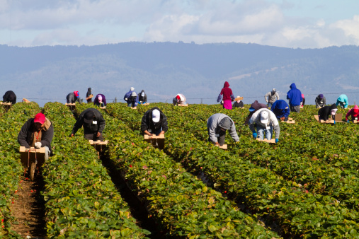

This app was created during a 7 day summer camp hosted by the Everett Program at the University of California at Santa Cruz, by a group of outstanding young women. Without knowing any code, they worked tirelessly to learn HTML and jQuery Mobile while simultaneously learning about health, food justice, ethical consumption, and workers rights.
We hope that this app will inspire you to become an advocate of Food Justice in your community.
My name is Ana. I am a math major at Cabrillo College. I plan to transfer to a four year university to study architectural engineering. Some of my passions/interests are nature/agriculture, art, computers, diversity, and social justice!
My name is Angelica and my goal is to graduate high school class of 2016 and hopefully get accepted to the Art Institute of San Francisco
Grey's anatomy is life
Junior at Alisal High School class of 2017
16
My name is Esmeralda and I'm a 16 year old girl from Salinas. I enjoy playing soccer and hanging out with my friends. I'm going into my junior year at Alisal High School and plan to graduate in 2017. I hope to attend the University of Oregon or SDSU to play soccer at a D1 school. My long term goal is to play professional soccer or to be an FBI agent.
Freshman at Aptos High
I love Wattpad and Vampire Diaries
14 years old
Future baker
I wanted to learn how to make a website
Freshman at Aptos high school class of 19 age 14
Favorite sport: softball
My name is Karen I come from Watsonville High School I will be entering my junior year of high school. I come from a background in which I've had a rocky road my entire life, yet I find a way to get through all of it and take strength within as well as in taking the experience that it has given me to use to help out others who I see that can use my knowledge or experience. I have built a big interest in technology and i believe that some day it will be a career that I will enjoy. What I learned at the YEI program I'll be using into making websites in which I was already asked to make. I enjoyed my experience in this program and i believe that more people should get to have this wonderful and even life changing opportunity.
My name is Katrina, (Kat), my dream is to create my own video game company and produce series of female-protagonist games. To get there, I'd like to study software engineering at either Stanford University or M.I.T.
Gerard Ortiz and Iggy Azalea (and Lucia) before the world.
Pajaro Valley High School Class of 2018
Age 14
I'm a sophomore high school student at Pajaro Valley. I'm fifteen, and love playing basketball. I want to go to Sac state. Lizet Arellano is my best friend.
My name is Lydia and I am going to be a Junior this year. I really enjoyed coding and learning about the problems my community faces. I hope this app can help resolve those issues and inform those who don't know about these important issues.
Hi my name is Marycruz and I am twelve years old, I go to Pajaro Middle School. I went to YEI because I was interested in making an app and I like coding. I'm also interested in art and technology.
Watsonville high
Class of 19 Freshman Age 13
I <3 the walking dead
Hey my name is Stephanie. I'm thirteen years old and live in Salinas, CA. Some of my hobbies include coding because it fascinates me.
The 2015 YEI team extends a warm thank you to everyone involved in making our camp a success. This year's camp would not have been possible without the help from the following programs.
The Everett Program is a social innovation lab stationed at UCSC for undergraduate students. Formerly known as the Global Information Internship Program, Everett has been an incubator for student-led projects since 1998. Everett projects blend student's passions for social justice issues with the latest technology to create sustainable and innovative solutions. Everett students have conducted projects all around the world and on a wide variety of issues ranging from women's empowerment to sustainable agriculture.
The Youth Empowerment Institue is an ongoing project that is sustained by a regular staff and by new students every year. The 2014 YEI group created an award winning "YEI College Mentor App" that is available for download in iTunes and Android stores. Although the themes and technologies have changed throughout the years, the main goal of YEI has remained the same--empowering local youth with the technological skills to become leaders in their communities.To learn more about about Everett and YEI, please visit everettprogram.org and everettprogram.org/yei.
The Food Chain Workers Alliance is a coalition of worker-based organizations whose members plant, harvest, process, pack, transport, prepare, serve, and sell food, organizing to improve wages and working conditions for all workers along the food chain. The Alliance works together to build a more sustainable food system that respects workers’ rights, based on the principles of social, environmental and racial justice, in which everyone has access to healthy and affordable food.
Joann Lo of the FCWA volunteered her time and professional expertise to help make the workers rights portion of the camp a success.
The Digital Nest is an open tech space for young adults aged 12-24. The NEST is located in Watsonville, CA and provides local youth with free access to WiFi, laptops, and other types of tech equipment. Their goal is to train and equip today's youth with the resources and skills needed to become the leading tech workforce of tomorrow.
As a member of the NEST, you can sign up for workshops taught by industry professionals that range from topics such as web design, video production, robotics, and more. Some members have already been able to apply their skills in the real world by being matched to employers for jobs such as creating websites. The Digital NEST has only just opened their doors last year, but they are already grossing over 400 members and are looking to expand.
If you would like to donate, become a member, or learn more about this booming organization, please visit digitalnest.org. The YEI team thanks the NEST for helping us with recruitment and for providing a tech space where the campers are able to continue developing their coding skills.
Food What?! is a fellow youth empowerment program that focuses predominantly on promoting Food Justice through sustainable agriculture. Their program recruits Watsonville youth to join their crew for various positions throughout the seasons: from internships in the spring, to jobs in the summer, and then business management positions in the fall. Their program's location bounces between farms in Watsonville and and the farm on the UCSC campus.
Not only do they teach youth how to be ethical consumers of the food they eat, they also adress major injustices surrounding access to healthy food in their communities. The FoodWhat?! Program creates a safe environment for youth to practice job skills, develop confidence, and undergo personal transformations. The 2015 YEI team thanks FoodWhat?! for sharing their knowledge on Food Justice with this year's campers.
Images used in the home page, and Ethical Consumption homepage were taken from flaticon.com. Some were altered.
Icon made by Freepik from www.flaticon.com is licensed by CC BY 3.0
Icon made by Freepik from www.flaticon.com is licensed by CC BY 3.0
Icon made by Freepik from www.flaticon.com is licensed by CC BY 3.0
Icon made by Freepik from www.flaticon.com is licensed by CC BY 3.0
Icons made by Plainicon from www.flaticon.com is licensed by CC BY 3.0
Icon made by Freepik from www.flaticon.com is licensed by CC BY 3.0

Icon made by Freepik from www.flaticon.com is licensed by CC BY 3.0
Icon made by Freepik from www.flaticon.com is licensed by CC BY 3.0
Icon made by Freepik from www.flaticon.com is licensed by CC BY 3.0
Icon made by Freepik from www.flaticon.com is licensed by CC BY 3.0
Other images take from around the web. Cited here.
From "Eat More of..." blog on tumblr. eatmoreof.tumblr.com/
From "Jeffrey Sterling MD" jeffreysterlingmd.com/
From "Ask Men" askmen.com/
From "Runners for Life Newsletter" runnersforlifenewsletter.com/
From "Answers.com" answers.com/
From "Wikipedia" wikipedia.org/
From "Israel Agri" israelagri.org/
From "The Doctors' Channel" thedoctorschannel.com
From "Gallery Hip" galleryhip.com/

From "Extension" extension.org/
Eating healthy is important because it can improve your abilities and open doors to things you can't do. Also eating nutritious foods feed the brain and can make your body function properly. The main reason you should eat healthy is because it can prevent you from having illnesses like cancer and heart disease. It can also improve your overall health to lead a healthy lifestyle.
This page contains general health tips that help your health and reduces your risk of chronic diseases. Try answering as many correct as possible to help you gain more knowledge.
Everything that makes up what your body is made of come from food, so you should consume good stuff.
Healthy food gives you healthy bones, but your bone structure is determined by your genetics
It dose have an impact in you health. We wouldn't need to talk about it if it didn't!
Sugar is not bad if you are lactose intolerant. Lactose intolerant people can't consume dairy products.
If you burn a lot of calories, it's better to eat more complex carbohydrates like bread and grains.
Not all Fats lead to obesity. You should eat fats in moderation and steer clear of saturated fats, though.
Fats are not found only in junk food. Some fats are very nutritional in moderation.
Some Fats are very helpful with having energy and they are not harmful in moderation.
Oils typically are full of particular fats, but oli itself is not an essential nutrient.
Fats are an essential nutrient. They do, however, have a lot of calories, so it's important to eat the right kinds of fats
Proteins are needed to build muscle, create enzymes, and regulate all sorts of essential functions
Vitamins & Minerals refer to a big family of essential chemicals and are very important to essential proceses in our bodies
Vegetarians do not eat meat, but they do eat animal products like eggs and dairy
Vegatarians do not eat any meats, and pescatarians don't eat any meats except for fish
Gardening, choosing local, Organic and avoiding GMOs are a great way to stay healthy
If you want to eat healthy, the drive thru is not really the place to start.
Women's health is a way you are balancing your food to keep your body energized and strong. When you are eating correctly, you keep you energy levels high and you are taking care of your health.
Berries are good for the heart because they are high in antioxidants and polyphenols.
Eating fruits and vegetables and high fibre food help prevent the disease. But it's important to understand that healthy eating is just one part of reducing the risk of disease.
Improving your diet is a great step towards preventing cancer and disease, but it won't completely eliminate it. It's important to understand that healthy eating is just one part of reducing the risk of disease.
No you do not have to be a vegetarian to prevent cancer, but it can help. It's important to understand that healthy eating is just one part of reducing the risk of disease.
Eating healthy makes it a low risk of it getting bad. It's important to understand that healthy eating is just one part of reducing the risk of disease.
In general practice men's health is the management of risks and health conditions most common to affect men and this way further the progress of ideal physical health as well as emotional and social health. Although sexual health is important, men's health goes past reproductive and sexual health.
Eating junk food may not be the best thing for you, but when eaten with moderation and a balanced diet it won't hurt.
Many people think that taking multivitamins will ensure a great health for them but that is not always true.
Chocolate has many outstanding health benefits ranging from skin care to cardiovascular health. Keep in mind that in order for you to get these benefits you must stick with a chocolate containing at least 70% cacao.
Trans fats are unsaturated which are the worst fats since they are man made and the human body can't process them very well. Not to mention the awful health impacts that come along with them.
Healthy eating in teens is essential because of their increased nutritional needs. Also, because the food they eat now will impact their health when they reach adulthood.
Weight gain and high blood pressure are both very real risks for teens who have a poor diet.
Teens that have a poor diet will have bad concentration and are not likely to get heart attacks as teens.
Skipping meals is bad for your health because you're missing out on nutrients you should be getting on a daily basis.
Not skipping meals and eating three times a day is the best way to maintain your weight and stay healthy.
A balanced diet that consists of vegetables, fruits, and nutrients is the healthiest diet.
The following tips are 100% helpful and were listed for your guidance to eat healthy and ultimately lead a healthy lifestyle.
This allows you to avoid impulse purchases when shopping and also helps to ensure that your meals for the week are healthy
Use coupons and know where the sales are locally or online.
Planning is key. Make a list and stick to it and definitely have a snack or meal before shopping.
<There are many benefits of growing your own produce: you save money, you will have your own store of fresh veggies, and like a proud mama you can say that you grew it yourself.
Whether you shop at a health food store or a warehouse-style store, stock up on the affordable stuff while it is affordable.
Try to eat at home as often as possible, and bring your own lunch to work. Cutting down on dining expenses will no doubt cut down on calories, too.Eat out less. Try to eat at home as often as possible, and bring your own lunch to work. Cutting down on dining expenses will no doubt cut down on calories, too.
Dont eat the same dish everyday, mix things up so that your body doesnt get overwelmed with the same thing.
Even our favorite foods can be unethically produced. For example the production may harm the environment, the producers may not pay the workers well or animals could be abused in the production.
Even healthy foods can have unexpected consequences on the environment and society.
Buying food produced by workers who are paid a living wage is a very important part of ethical consumption, however it is not the only part. There are many other aspects to ethical consumption.
The food production chain affects the environment in many ways. Some ways are subtle and some are blatant. How much do you know?
If anything, the industries are restricting our use, so there's more for them to use for their products.
A loaf of bread requires about 240 gallons of water, a pound of cheese takes about 382 gallons, turkeys take about 160 gallons of water, and a pound of beef takes up 1,800 gallons.
Actually when you fish too much it messes with the other animals in the ocean
It is extreamly bad because fish could go extinct if we keep going at this rate
Transporting food a long distance produces CO2 because of all of the trucks that are using fuel
CO2 is also produced when we need to preserve boxed whole or pre-cut birds as dry ice pellets and other foods
The construction of factories normally involves the production of cement that produces CO2
Yes. Cancer and deadly diseases are an outcome of buying non-organic products with gmo(genetically modified organism(s)), but is not the leading consequence of buying non-ethical consumer.
As a consumer, purchasing products that aren't considered ethically consumed, or products that don't follow guidelines to an efficient food chain , you are technically supporting the industry of farms that abuse animals and do not abide to an animal rights.
An ethically consumable product completely follows the guidelines of organic food, safe farms, and affordable products for everyone.
Both chickens bred for egg laying and breast meat are the most abused animals there is. They are force fed unnatural feed to enhance their hormone growth for egg laying and overfed to fatten them up for more meat.
Pigs are naturally curious animals so they often want to roam around a lot. However, being confined in a small tight space restricts them from doing so, so they get frustrated. When pigs get frustrated they bite off their tails. Workers usally cut them off before this happens.
There are antibiotics found in cow meat because of how much they're given while they're alive. Antibiotics that are consumed make vaccinees harder to work efficiently.
Puss is allowed in milk, the FDA regulates how much can puss can be in each quantity of milk though.
There are anti-biotics from the cow in milk.
In California animals that are sold in food markets, are not allowed to be dismembered, cut open, skinned, or plucked while they are still alive, yet it still happen
Lots of animals and plants are now GMOs so that they can produce more of something, make them produce something new, even to make their meat healthier
This is not illegal but can cause a lot of problems for people who can become immune to the antibiotics
A case in Colorado of animal abuse was brought to the eye of the public when an undercover employee video footage was released. The footage showed workers beating pigs with wood planks to kill weak or dying piglets. The video also contained footage of the workers tazing and kicking pigs too heavy to sustain their own weight. This pork company was a supplier of pork meat to Walmart.
Another disturbing case of animal abuse. The pigs at the farm were shown to be kept in a confined place so small they could barely stand.
Footage has also been released The Tyson Pork Group beating animals to death and cramming animals trailers for transportation.
To be considered organic the foods cannot have synthetically produced chemicals other than those specifically allowed
Organic foods can have been treated with natural (non-synthetic) chemicals other than those specifically prohibited
By combining fish genes with tomato so that they have a longer shelf life
This GMO was made so that a goat would be able to produce spider silk
All of these plants and animals have had their original DNA mixed with another organism's
Click below on each sector of the food chain to test your knowledge of the major violations of food worker rights in the U.S.!
Production is the first stage of the food system. All food must be either planted or raised, maintained, and harvested. Farmworkers comprise a large majority of this sector.
Workers in the processing stage prepare raw food for packaging and shipment. This is usually done by people in assembly line working in factories. Some foods require more time for processing than others, such as raw meats or snack foods with long shelf lives.
The distribution stage involves the transportation of food from one location to another. Warehouse, distribution center, and truck workers play an important role in this sector. In the United States, food often travels many miles before it reaches the consumer.
People who work in grocery stores, convenience stores, or any other store that sells food are part of this stage in the food chain. This includes people who work in the deli section or bakery within supermarkets, as well as those who stock shelves and receive shipments.
The service sector is the final and largest sector of the food chain. Workers in this sector includes anyone who works for an establishment that sells prepared food--from restaurants to taco trucks and even dining halls. Job titles include: waiters, waitresses, bartenders, cooks, runners, and dish washers.
Throughout America's history, there has been a common pattern relating to agricultural labor--do you know what it is?
After the Mexican-American war, tens of thousands of migrant Mexican workers moved freely in and out of The United States for seasonal jobs.
After the Civil War, Southern states passed laws named "Black Codes" that limited the rights of African Americans. Part of this law required them to have a special permit if they wanted to work in something other than agriculture.
Government passed amendments to the Constitution that benefited the African American community: the 13th Amendment abolished slavery, the 14th Amendment gave everyone born in the United States citizenship status, and the 15 Amendment gave African American men the right to vote.
As members of the African American community moved to other industries, the farming industry continued to grow making the need for workers to grow as well. The United Stated then began to gather workers from Asia. Around this time, 7/8 farmworkers were Asian. The treatment they received was no different than those of the African American community.
The United States banned employment for Chinese workers as part of The Chinese Exclusion Act.This was the first attempt to stop the flow of immigrants from a specific ethnic group coming to the US.
Despite all of the amendements that had passed, segregation continued under the Jim Crow Laws. African Americans were still being treated like slave workers because many were in debt with landowners. They only got a partial share of the crops they worked for.
Migration from Europe to the US decreased during WWI, making the demand for Mexican farmworkers increase and resulting in more than 70,000 Mexican workers into The United States.
The Great Depression and the Dust Bowl, which was a huge dust storm that covered an area of 150,000 squared miles in central United States, caused many white landowners to lose their land. This potentially caused the Mexican Repatriation policy to be authorized. This policy caused over 500,000 Mexican-Americans to be deported. Around this time the U.S. government also passed labor laws that specifically excluded farmworkers from basic worker rights, such as workers compensation, overtime pay, collective bargaining, and laws against child labor.
A temporary work-visa program was created known as the Bracero Program. This allowed foreign workers, mostly Mexicans, to come to the United States for seasonal jobs. After the season was over they would go back home.
Cesar Chavez and Dolores Huerta joined to create the United Farmworkers in California. To this day this organization keeps fighting for farmworker rights.
The Bracero program ended in 1964. Since it ended, farm workers from the Bracero program are still fighting to get the 10% mandatory reduction from their wages that they were supposed to receive once their contract ended and left the U.S.
As this timeline shows, the common pattern throughout history is that the majority of farmwork in the United States is done by immigrants. Millions have come to this country for agricultural labor--sometimes forcibly, sometimes voluntarily, and sometimes only on a temporary basis. Beginning again in 1970, farmworkers have mostly come from Mexico and Central America. It is calculated that about 75% of these farmworkers are undocumented. In addition, a modern day version of the Bracero program currently exists and is known as the H-2A program. This federal program allows immigrants temporary work visas for farm labor.
Which of the following reasons explain why fieldworkers get paid so little?

Because so many fieldworkers migrate from poor countries, employers can get away with paying them with a very low wage compared to native-born Americans.
Many fieldworkers in the Watsonville area begin working in April and end around November. Because of this temporary basis, hardly any workers receive benefits or raises. There are hundreds of workers who have been working in the same fields for 20+ years, but have never received a raise (except for when the federal minimum wage raises).
Farm labor sometimes lasts up to 10-12 hours per day, workers must stay in uncomfortable positions for long periods of time, and the work is done in very hot weather conditions.
Due to low wages, many field workers cannot provide for their families entirely on their own. As a result, many parents unwillingly put their children to work in the fields beside them.
Since many are only earning the minimum wage, field workers don't have enough money to buy a house in expensive areas like Santa Cruz County. This means that they can either rent rooms or live on the streets.
It is very difficult to live off of the minimum wage, especially in Santa Cruz County. Communities cannot prosper if the workers are not earning a living wage.
Do you know the types of health problems field workers face and their effects?
Field workers must pack as much produce as they can in order to make a certain amount of money. These workers don't have sick leave, meaning if they take a sick day off they will not make any money. Many of these field workers cannot afford to lose a day worths of money so they decide to go to work instead.
Pesticides are commonly used on farms and are meant for attracting and destroying pests. Field workers often are not safely protected from pesticides and must work alongside them.
Staying hydrated is very important for staying healthy, especially under hot working conditions. Drinking enough water means that you need to be able to use the bathroom consistently. For many field workers, however, breaks are too short and sometimes rushed, leaving no time to use the bathroom.
Working in the fields is very difficult, especially for women. Most female fieldworkers experience some sort of sexual harassment while working in the fields. Sexual harassment often occurs because farm workers rarely,if ever, receive sexual harassment training. A common form of sexual harassment is catcalling. Catcalling is when a women receives an unwanted comment, whistle, or shout of a sexual nature.
Imagine going to work and dealing with nasty men who keep touching and looking at you you inappropriately, as if they are mentally undressing you with their eyes. Women in the fields suffer these types of harassment all the time. Statistics have shown 80% of women field workers report sexual harassment and 20% percent don't report it.
Injuries
Many field workers in California and around the nation are undocumented immigrants, so when they do injure themselves at work they are sometimes too afraid to confront their supervisor. Having an injury can mean that they'll get fired and become unable to provide for their families, or worse, get deported. When field workers do get injured and they file for workers compensation, they most likely don't get it. A common injury field workers face are back pains. The back pain could be hurting them so badly that they need to see a doctor. It's unfair how field workers can tolerate all that pain, while most people can even tolerate a simple pinch.
Workers in food processing turn raw food items into finished products, either by hand or on assembly lines in plants or factories. This includes both highly processed snack foods as well simpler items such as breads, cheese, and tortillas. Also included in this category are slaughterhouse workers and animal processors.
That wouldn't be very sanitary. You can't process food outside or else it could get dirty
Food has to be processed at cold temperatures to stop bacteria from growing
In the processing industry many workers work hard in a cold cooler/freezer for long hours causing stress. Working in a cooler can lead to an illness because of the warm sweat that is being produced while being in a very cold area.
A warm environment is the worst possible place to process food because it would allow bacteria to grow
Food does attract pests like insects and rodents, but rarely does a Grizzly Bear wander into a cannery
Working in a cold environment with a heavy coat leads to sweat trapped in your coat and can cause illness.
There's another big hazard in this list. Try and find it!
When you're cutting the wings off hundreds of chickens a day, the knife may slip and cut you!
There's another big hazard in this list. Try and find it!
At this stage, workers transport food from one destination to another and load and unload food at warehouses and distribution centers. These may be final points of sale or intermediate locations for storage or further processing. Essentially, distribution connects the material at each stage of the food system. While a large component of this involves transportation, this stage also includes warehousing, refrigeration, logistics, and coordination.

Correct! Kroger owns multiple successful grocery stores such as Food 4 Less, Ralphs, and Quik Stop convenience stores.
Correct! Walmart just recently raised their minimum wage to at least $9 per hour for their workers. Despite their cheap food prices, the closest Walmart to Watsonville is 30 minutes away.
False! FoodMaxx offers some of the cheapest food prices in Watsonville, but it is not a major supermarket chain. This store is part of a larger chain named SaveMart Supermarkets.
Correct! There is only one local Safeway in Watsonville, while there are three in Santa Cruz. Even though they are large and packed stores, their produce is often too expensive to afford on a daily basis for many members in the local community.
Correct! In 2012 the Coalition of Immokalee Workers (CIW) conducted a 6 day hunger strike advocating for Publix to raise at least 1 cent per pound on the prices of their tomatoes in order to double tomato farmer's wages. However, Publix denied even speaking with them.
The service sector is the largest segment of the food system. Workers in this segment prepare, cook and serve food, bartend, and wash dishes. This sector includes full-service restaurants, casual dining and quick service establishments, catering businesses, food trucks, and food service establishments such as cafeterias and dining halls.
You're a server at a fast food restaurant. You accidentally messed up the customers order. The customer starts raging. What do you do?
Boss: "Customer is always right." Often servers are seen as not so much important and are sometimes mistreated because some customers are pretentious.
Boss:"You're fired!!" It's natural to snap back or react to someone who is making you angry. Especially when a customer is being difficult.
You keep the job, but feel disrespected and abused because you had no power to do anything, and if you did, you would've have suffered the consequences you didn't deserve